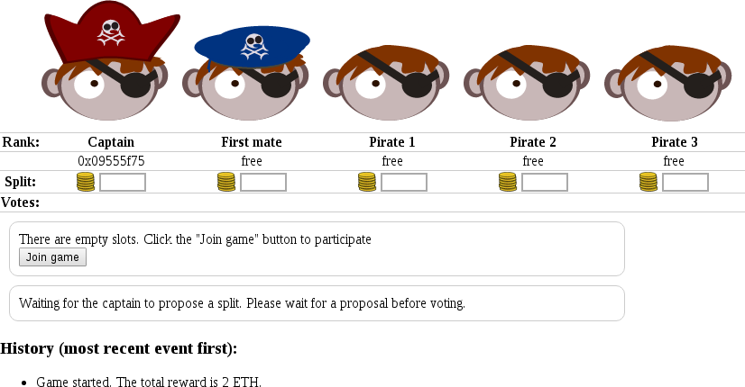
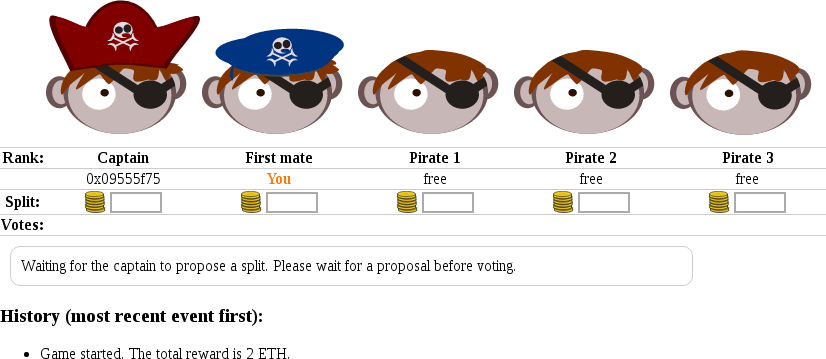
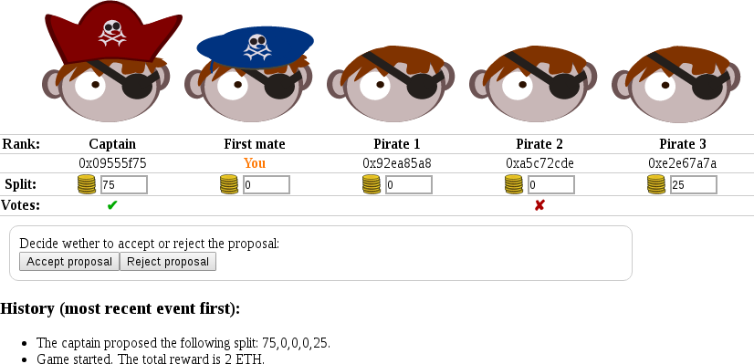
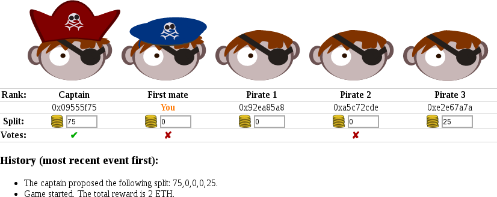
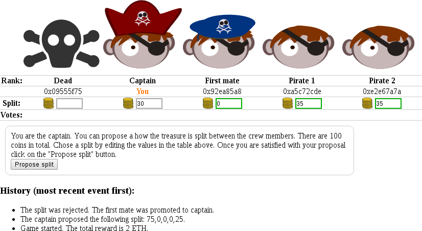
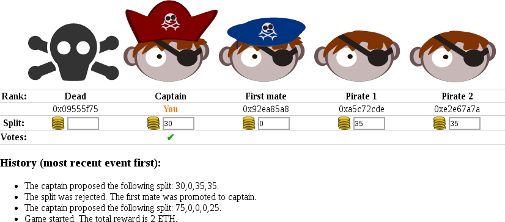
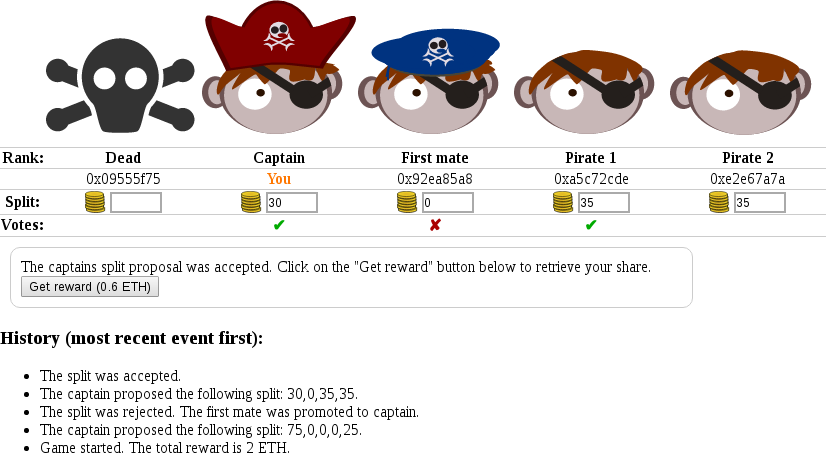

Manual
This manual consists of two parts:
- A description of the pirate game
- An example game with user interface screenshots, that describes all user interaction in detail.
1. The pirate game
In the pirate game you are a member of a band of 5 pirates. These pirates have a strict hierachicy:
- Captain
- First mate
- Pirate 1
- Pirate 2
- Pirate 3
Your band of pirates found a treasure chest with 100 coins. The captain has the authority to decide how many of the coins he wants to give to each individual crew member. After the captain decided on a split, the crew determines by open ballot, whether they accept his split proposal or not.
If half or more pirates vote for accepting the proposal, the game ends and each pirate receives the number of coins the captain promised him. If more than half of the pirates vote for rejecting the proposal, the captain is killed. With the position of captain vacant, the first mate becomes the new captian, Pirate 1 becomes the new first mate, etc. The remaining pirates repeat the process of proposing and voting until a proposal is accepted.
For every action, the mist browser will ask the player to confirm the resulting transaction and display the corresponding data and transaction fees. Aside from the transaction fee, no value is transferred.
Note: The captain always votes to accept the proposal. This ensures that the game ends after at most 4 proposals.
2. Example game and user interface
The following screenshots show a whole game from the perspective of one player, who encounters all possible situations that require a player action. Due to the nature of Ethereum, an action will typically take between 10 seconds and a minute to be processed. During this time the user interface will not reflect the action taken by the player.
Note: Very rarely a transaction may get lost. If you believe this happened, click the button corresponding to your action again. There is no danger in sending redundant actions, since only the first action the game receives from a player during every phase of the game will be processed.
2.1 Interface overview and joining
When the player opens the user interface for the first time, the interface resembles picture below. The user interface consists of three parts:
- Top (table)
- Summarizes all important information about the current situation.
- Middle (boxes)
- Shows text boxes, that inform the user about possible actions, and shows the corresponding buttons.
- Bottom (history)
- Shows the history of the game as a list of bullet points. The most recent event is listed on top.
Click the join button to participate in the game. The first player to join will be the captian, the second will be first mate etc.

After the joining, the table will contain the word 'You' in the column that shows you rank, promised number of coins etc. The text boxes below the table will inform you about possible actions if there are any. You do not have to wait for other players to join before taking actions.

2.2 Waiting for a proposal
In this example you were the second participant to join the game. There is no possible action until the captain has proposed a split.
2.3 Voting on a proposal
Once the captain has proposed a split, it is shown in the table (see "Split" row). You can now vote to accept or reject the proposal by clicking the respective button in the text box below the table.

Once the game has processed your vote, a green checkmark (accept) or red cross (reject) appears in your column of the table's "Votes" row. In this example you voted to reject the proposal. Other players votes will appear in their respective column, whenever they are received.

2.4 Proposing a split
In this example, the previous captain's split proposal was rejected. As a result, you are the new captain (note the changed avatars and ranks). To choose a split, edit the input fields in the table, that are highlighted by a green outline.
After editing the split proposal, click on the "Propose split" button in the text box below the table.

When proposing a split, the captain automatically votes for acceptance and can not take any further action until the vote ends.

2.5 Payment
Once a split proposal was accepted, you need to click on the "Get reward" button to receive the ETH corresponding the your share of the 100 coins.
